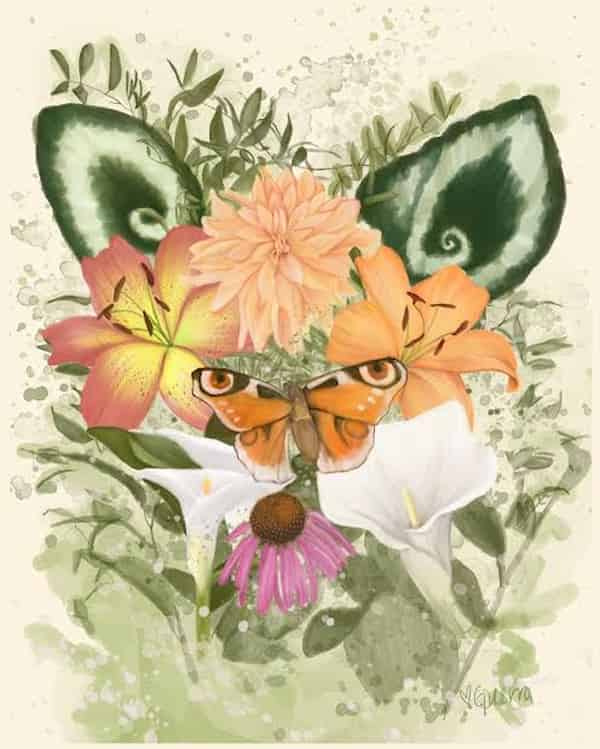
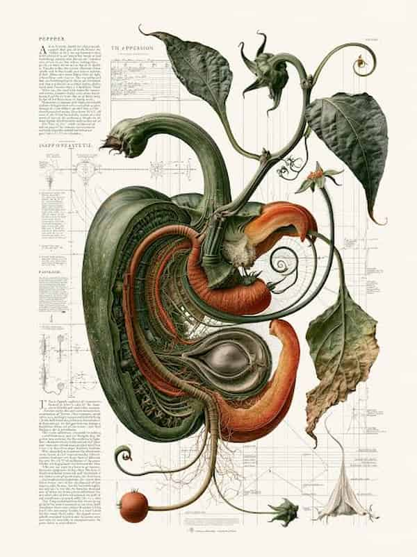
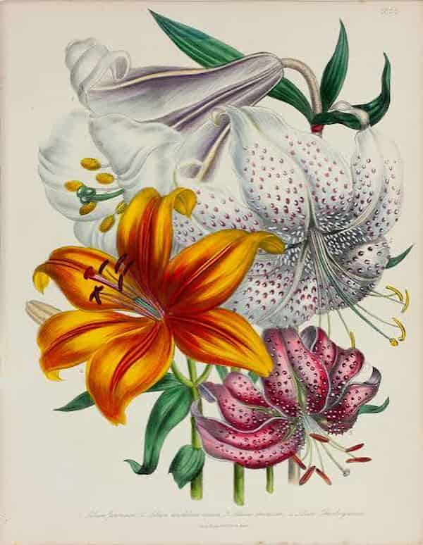
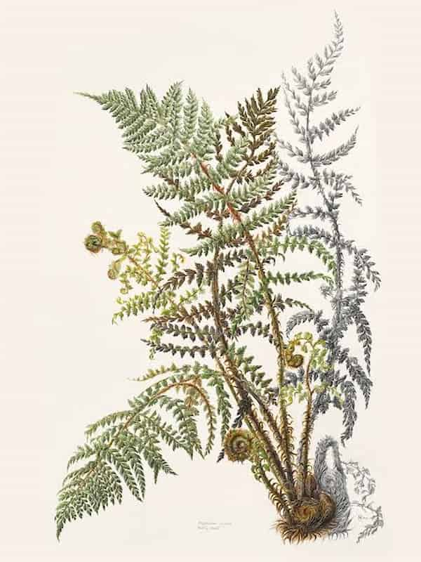

Botanical Illustration in the Modern Day
The Shift from Traditional to Digital

As photography became more popular in the 20th century, botanical illustration began to change. New printing methods, including photoengraving and offset printing, made photographs easier to reproduce in scientific publications. However, illustrations remained valuable because artists could emphasize important plant structures, clarify details, and combine features from multiple specimens into one accurate image.
Modern Tools and Techniques

Technology has expanded what botanical artists and scientists can observe. Electron microscopes allow researchers to study structures that cannot be seen with the naked eye, while modern imaging techniques can reveal details at microscopic and molecular levels. Artists continue to use traditional methods like watercolor, ink, and drawing, but digital tools have also created new ways to document and present plant life.
Botanical Illustrators Today

Botanical illustrators continue to work with scientists, museums, botanical gardens, and research organizations. Their illustrations appear in scientific publications, field guides, plant catalogs, and educational materials.
Modern artists have also taken on large projects documenting entire plant groups. For example, Australian artist Celia Rosser spent decades illustrating every known species of Banksia. Her work became an important botanical reference, and a species was later named Banksia rosserae in her honor. Alice Tangerini also made history in 1972 when she became the Smithsonian Institution's first botanical illustrator.
Conservation and the Future

Today, botanical illustration plays an important role in documenting biodiversity and raising awareness about environmental changes. Artists help record rare and endangered plants, creating detailed visual references that can be used by researchers and conservationists.
As climate change and habitat loss continue to affect plant populations, documenting species has become increasingly important. Traditional botanical illustrations can serve as lasting scientific records, preserving details of plant life for future generations. Even with advances in photography and digital technology, botanical illustration remains a valuable combination of art, science, and conservation.